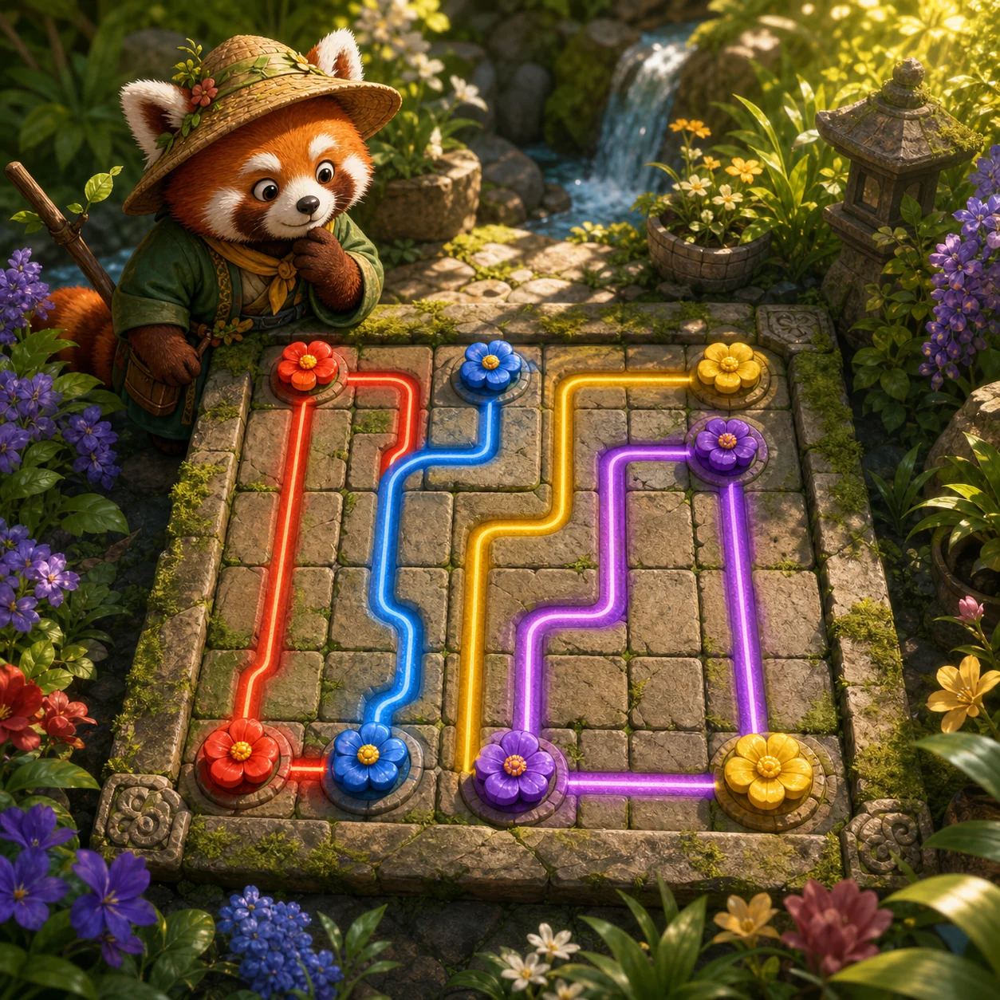

PANKO'S PUZZLE GARDEN
Color Link Garden
Connect every matching seed without crossing paths. Fill the whole garden to bloom.
PANKO'S PUZZLE GARDEN
How to play
Drag from one colored seed to its match. Paths cannot share a tile, and every tile must be filled.